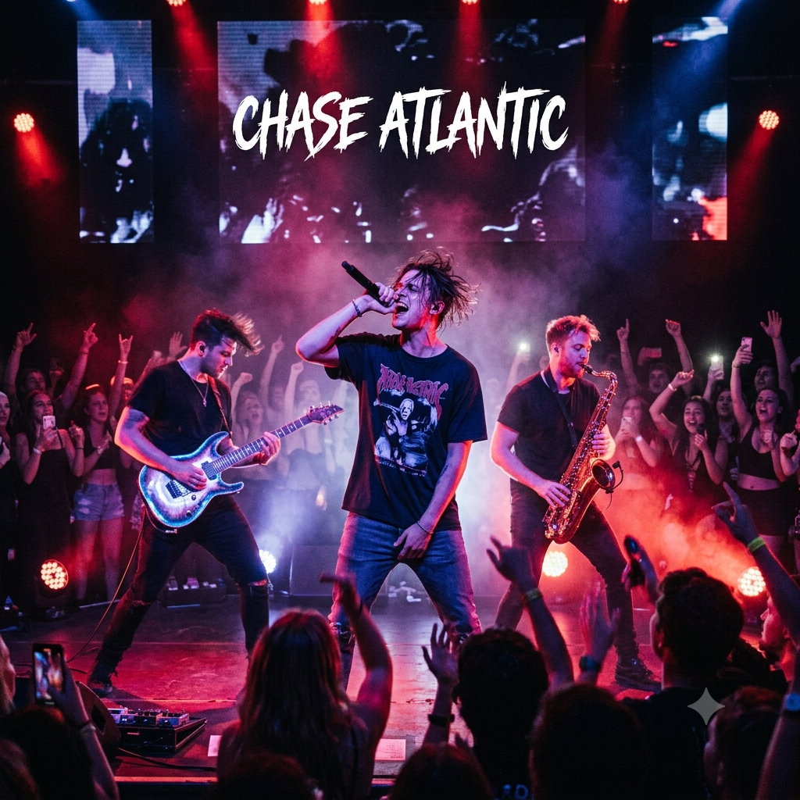

Meu primeiro post
por:Deysielle
Boas-vindas ao meu novo blog! Aqui vou comprtilhar meus conhecimentos e curiosidades sobre a banda Chase Atlantic

Quem é o Chase Atlantic
Chase Atlantic é um trio australiano formando por Mitchel Cave Clinton Cave e Christian Anthony. O grupo surgiu em Cairns, na Austrália, e ficou conhecido por misturar elementos de R&B alternativo, pop, rock, trap e música eletronica. A banda começou sua tragetória em 1014 e, desde entao, conquistou fas ao redor do mundo.
class= "artigo-fonte> fonte: target="_blank">